Let users interact anonymously, convert them when they see value.
Eliminate onboarding friction and increase user conversions. Ghost creates instant anonymous sessions, captures leads without interrupting the user journey, and seamlessly converts trial users into verified customer accounts preserving every interaction with zero data loss and no unnecessary database bloat.
⚡ Getting Started
Integrating Ghost into your Frappe deployment takes less than 5 minutes and requires zero modifications to your database schemas or existing custom user tables.
1. Prerequisites & Installation
Ensure your system is running Frappe Framework v15 or later with an operational MariaDB database and active scheduled jobs background worker.
# Fetch application repository from GitHub
bench get-app https://github.com/muneeb141/ghost
# Install app onto your target site
bench --site your-site.localhost install-app ghost2. Initial Configuration (OAuth Client)
Ghost operates natively on standard industry OAuth2 Bearer Token Authentication rather than fragile session cookies. Before enabling, configure your site's OAuth client:
- Navigate to Setup > Integrations > OAuth Client in Frappe Desk.
- Create a new OAuth Client with Grant Type set to
Password / Authorization Code. - Copy the generated Client ID value.
- Navigate to Setup > Ghost Settings, check
Enable Ghost Feature, and paste your Client ID.
Don't Forget the Scheduler!
Ghost relies on automated background workers to cleanly purge expired anonymous accounts, send cart
abandonment reminders, and sweep outdated logs. Ensure your site scheduler is enabled via
bench --site your-site enable-scheduler.
3. Quick API Verification
Test your live installation immediately using simple command-line HTTP requests:
curl -X POST http://your-site:8000/api/method/ghost.api.ghost.create_ghost_session \
-H "Accept: application/json"Expected Successful Response (200 OK):
{
"message": {
"user": "ghost_4f9a823c@guest.local",
"access_token": "a1f59c8d23b7e40a...",
"refresh_token": "f901c238e4a9b231...",
"expires_in": 3600,
"token_type": "Bearer"
}
}🚀 How It Works & Conversion Mechanics
Ghost acts as an intelligent identity bridge between anonymous interactions and permanent verified user records. When an unauthenticated visitor interacts with your platform, Ghost provisions a secure temporary guest account accompanied by cryptographically secure OAuth2 tokens.
┌────────────────────────────────────────────────────────────────────────┐
│ 1. Anonymous Visitor arrives on Web/Mobile App │
│ └── Request: create_ghost_session() │
│ └── Return: Bearer Token + temporary ghost_xxxx@guest.local │
├────────────────────────────────────────────────────────────────────────┤
│ 2. Active Browsing & Data Accumulation │
│ └── User populates Cart, Favorites, Wishlists using Bearer token │
│ └── Option: capture_lead_email() triggers abandoned cart reminders │
├────────────────────────────────────────────────────────────────────────┤
│ 3. Seamless Verification & Transition │
│ └── Option A: OTP Verification via Email or SMS │
│ └── Option B: One-Click Magic Email Link │
│ └── Option C: Instant Social Sign-In (Google OAuth ID Token) │
├────────────────────────────────────────────────────────────────────────┤
│ 4. Permanent Account Established (Zero Data Loss!) │
│ └── Targeted SQL reassigns all Cart & Wishlist links automatically │
│ └── Real user tokens returned; temporary ghost credentials voided │
└────────────────────────────────────────────────────────────────────────┘Dual Conversion Pathways
To preserve production system performance and avoid severe database lockouts caused by standard framework ORM table scanning, Ghost implements two optimized conversion pathways:
- Path A: Targeted Rename (New Users): When converting to a real email address that does not
yet exist in your database, Ghost uses high-speed direct SQL queries against configured link and child tables
(
_GHOST_LINK_TABLESand_GHOST_CHILD_TABLES), changing the user ID record instantly without initiating heavy framework table scans. - Path B: Manual Migration (Existing Users): If the user enters an email address that already has an active registered account, Ghost bypasses standard user merging entirely. Instead, it reassigns ownership of application-owned records (such as active carts or lead logs) from the ghost ID to the existing account, ensuring complete isolation and protection of user credentials.
🎯 Universal Industry Applications & Use Cases
Ghost is intentionally designed as an agnostic, industry-neutral authentication and conversion engine. From a functional and technical perspective, standard "register-first" paywalls degrade user acquisition across every modern software domain. Ghost eliminates these barriers by decoupling guest session state from mandatory identity registration, empowering high-growth digital businesses across diverse verticals:
Ghost Lead) to silently harvest email addresses
entered into general contact popups, empowering sales representatives with instant CRM follow-up automation!
Architectural Versatility (Frontend & Backend Neutrality)
Because Ghost operates as a clean abstraction layer over the native Frappe Framework User, OAuth2
bearer token, and scheduler ecosystems, system engineers can integrate it into any modern client-side
environment. Whether your enterprise UI is built in React, Next.js, Vue, Nuxt, Svelte, iOS Swift,
Android Kotlin, Flutter, or traditional server-rendered Jinja / Frappe Desk
templates, Ghost handles temporary token lifecycle pruning and high-performance SQL transformations in the
background with zero database lockouts.
✨ Feature Roster (11 Complete Modules)
Ghost provides an extensive suite of modular tools designed to enhance user acquisition, protect infrastructure, and provide powerful actionable insights.
1. Anonymous Sessions
Instantaneous creation of guest accounts (ghost_*@guest.local) supported by standardized
OAuth2 access and refresh bearer tokens.
2. OTP Conversion
Secure 6-digit PIN verification sent via email or pluggable SMS gateways to validate user identity before transition.
3. Analytics Dashboard
Dedicated desk interface tracking session generation, successful conversion ratios, drop-offs, and time-to-convert metrics.
4. Event Webhooks
Real-time HTTP POST webhooks configured with HMAC secret signing to instantly alert CRM, marketing, or automated Zapier flows upon conversion.
5. Magic Link Conversion
Frictionless one-click conversion via automated email token hyperlinks, bypassing manual OTP number entry completely.
6. Social Sign-In (Google)
Instantaneous conversion by verifying cryptographically signed Google OAuth2 ID tokens directly within your backend API.
7. Soft Lead Capture
Collect user email addresses during mid-session checkouts without full verification to support automated abandoned cart recovery campaigns.
8. Multi-Device Merging
Intelligently detect and unify segmented ghost user activity across desktop, tablet, and mobile browsers when a shared lead email or login occurs.
9. Conversion Funnel API
Specialized REST endpoints outputting time-series conversion funnel statistics formatted for immediate ingestion by Grafana or Metabase.
10. Bulk Ghost Cleanup
High-performance direct batch SQL purging routines designed to routinely clear out expired anonymous sessions in 100k+ enterprise database architectures.
11. Session Fingerprinting
Device and browser footprint matching that detects returning unauthenticated users and reconnects them to their existing active ghost account.
⚙️ Ghost Settings Reference
Ghost enforces a strict techno-functional rule: every single feature must be fully configurable by system administrators from a centralized dashboard. No capability is hardcoded to "always on."
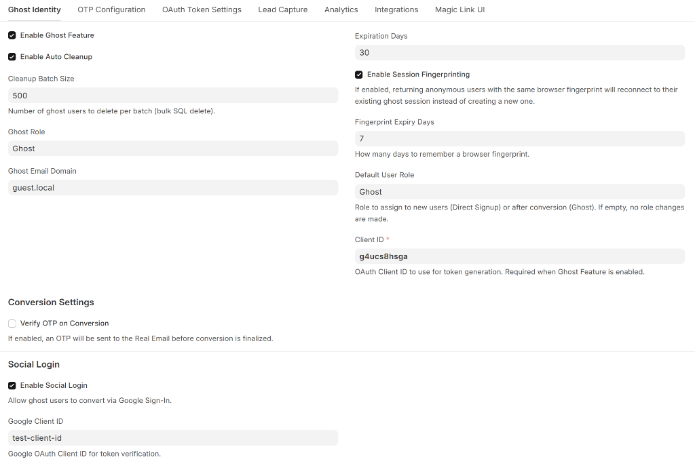
Tab 1: Ghost Identity & Social Login
Serves as the primary control panel for anonymous account creation, batch database purging routines, session fingerprinting limits, and third-party Social Login transformations.
| Fieldname / Label | Type | Default | Description |
|---|---|---|---|
enable_ghost_feature |
Check | 0 (Disabled) |
Master switch controlling whether guest APIs provision new ghost sessions. |
enable_auto_cleanup |
Check | 1 (Enabled) |
Allows background jobs to purge expired anonymous sessions automatically. |
cleanup_batch_size |
Int | 500 |
Number of expired records to purge per database transaction during scheduled tasks. |
ghost_role |
Link (Role) | Ghost |
Frappe permission security role assigned to newly created temporary users. |
ghost_email_domain |
Data | guest.local |
Domain string appended when generating random guest identifiers. |
expiration_days |
Int | 30 |
Number of days an un-converted ghost user remains active before being targeted for deletion. |
enable_fingerprinting |
Check | 0 (Disabled) |
Enables matching returning anonymous visitors by their hardware/browser hash footprint. |
fingerprint_expiry_days |
Int | 7 |
Number of days a stored device fingerprint remains valid before a new user account is spun up. |
client_id |
Data | — | Required OAuth2 Client ID utilized for token signing and generation. |
verify_otp_on_conversion |
Check | 1 (Enabled) |
Requires a valid OTP code verification before transitioning an account. |
enable_social_login |
Check | 0 (Disabled) |
Enables direct Google Sign-In conversion endpoints. |
google_client_id |
Data | — | Your organization's authorized Google Cloud OAuth Client Application ID. |
enable_magic_link |
Check | 0 (Disabled) |
Activates one-click conversion via automated email URLs without requiring passwords. |
magic_link_expiry_minutes |
Int | 30 |
Lifetime duration of generated magic conversion token strings in minutes. |
magic_link_redirect_url |
Data | /app |
URL path destination where authenticated users are redirected after successful link conversion. |
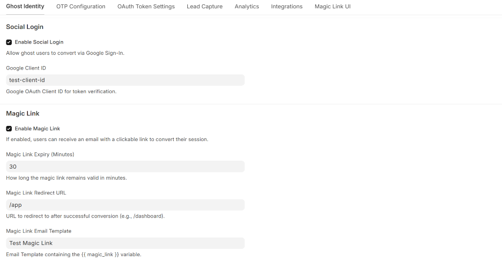
Tab 2: OTP Configuration
Governs one-time password expiration windows, delivery channels (Email/SMS/Both), rate limiting lockout policies, and developer QA testing bypass overrides.
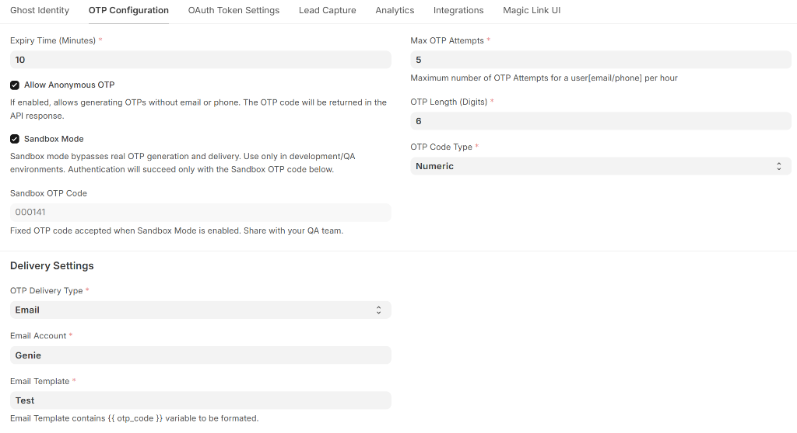
| Fieldname / Label | Type | Default | Description |
|---|---|---|---|
expiry_time_minutes |
Int | 10 |
Duration before an issued OTP PIN code expires. |
allow_anonymous_otp |
Check | 0 (Disabled) |
Allows generating OTPs without pre-existing email or phone records for frictionless trials. |
sandbox_mode |
Check | 0 (Disabled) |
QA and local development toggle. When enabled, bypasses real email/SMS dispatches. |
sandbox_otp |
Data | 000141 |
Fixed test OTP PIN universally accepted when Sandbox Mode is active. |
max_otp_attempts |
Int | 5 |
Maximum allowed validation attempts per OTP before temporary rate-limit lockout. |
otp_code_type |
Select | Numeric |
Format of generated verification challenge strings (Numeric vs Alphanumeric). |
otp_delivery_type |
Select | Email |
Delivery channel selector: Email, SMS, Both, or
None.
|
email_account |
Link | — |
Designated outbound email sender account utilized for transactional OTP delivery. |
Tab 3: OAuth Token Settings
Establishes rigorous security parameters over temporary access tokens, refresh token longevity schedules, and automatic cryptographic cleanup policies upon conversion.
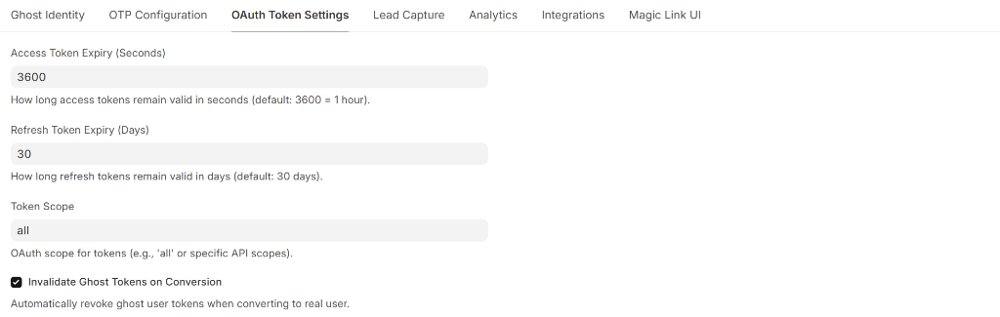
| Fieldname / Label | Type | Default | Description |
|---|---|---|---|
access_token_expiry |
Int (Seconds) | 3600 |
How long temporary bearer access tokens remain valid in seconds (default: 1 hour). |
refresh_token_expiry |
Int (Days) | 30 |
How long associated refresh tokens remain valid before requiring new authentication. |
token_scope |
Data | all |
Allowed OAuth2 API scope string attached to generated token profiles. |
invalidate_ghost_tokens_on_conversion |
Check | 1 (Enabled) |
Automatically revokes and purges all previous anonymous tokens upon conversion to a verified user account. |
Tab 4: Lead Capture & Multi-Device Merging
Provides abandoned cart recovery tools by saving guest emails into dedicated CRM records while unifying disparate guest sessions across mobile and desktop interfaces.
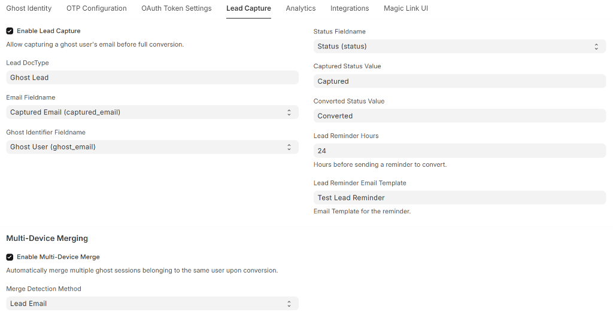
| Fieldname / Label | Type | Default | Description |
|---|---|---|---|
enable_lead_capture |
Check | 0 (Disabled) |
Allows saving customer email addresses into dedicated records without completing full conversion. |
lead_doctype |
Link | Ghost Lead |
Target database entity table where intercepted pre-conversion contact info is stored. |
lead_reminder_hours |
Int | 24 |
Hours to delay before automated background worker routines dispatch reminder notifications. |
enable_multi_device_merge |
Check | 0 (Disabled) |
Enables combining separate guest profiles when matching captured emails are discovered. |
merge_detection_method |
Select | Lead Email |
Algorithm criteria employed to discover and link corresponding sessions across hardware devices. |
Tab 5: Analytics & Funnel Monitoring
Configures conversion performance event logging and displays read-only reference documentation for integrating real-time conversion funnel telemetry into custom management reports.
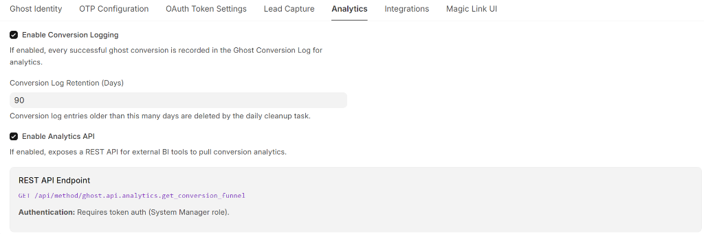
Tab 6: Integrations & Webhooks
Facilitates server-to-server event dispatching and live WebSocket broadcasting when guest accounts successfully transform into registered profiles.
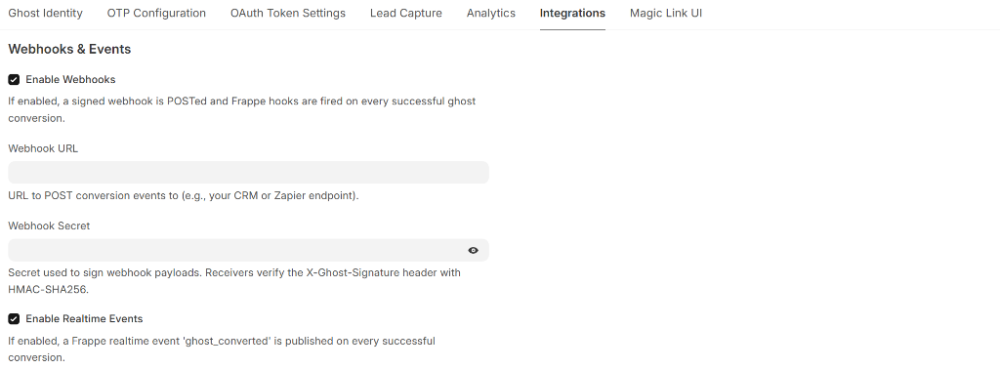
| Fieldname / Label | Type | Default | Description |
|---|---|---|---|
enable_webhooks |
Check | 0 (Disabled) |
Master switch for dispatching real-time external HTTP POST notifications upon conversion events. |
webhook_url |
Data | — | External HTTP destination endpoint (e.g. Zapier, Make.com) that receives structured JSON logs. |
webhook_secret |
Password | — | Cryptographic HMAC passphrase utilized to generate automated signature verification headers. |
enable_realtime_events |
Check | 0 (Disabled) |
Emits live WebSocket events to connected frontend client interfaces when conversion occurs. |
Tab 7: Magic Link UI Customization
Enables developers and marketing teams to completely override the default styling and layout of automated
passwordless conversion verification web pages using raw HTML, CSS, and dynamic Jinja template variables (such
as {{ magic_link }} and {{ error_message }}).
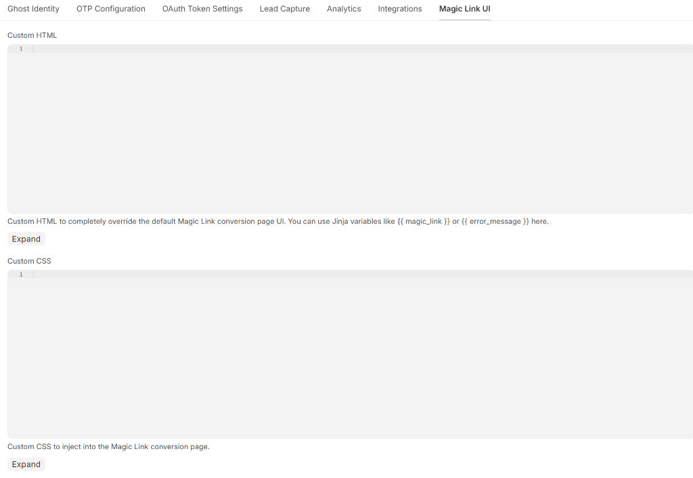
📊 Native Desk Analytics & Conversion Telemetry
Ghost eliminates the need for expensive third-party tracking software (such as Google Analytics, Mixpanel, or PostHog) by integrating an enterprise-grade interactive data visualizer directly into your native Frappe Desk interface. Hosted at the Ghost Analytics administrative page, this dashboard delivers high-resolution, real-time telemetry across your entire customer onboarding pipeline.
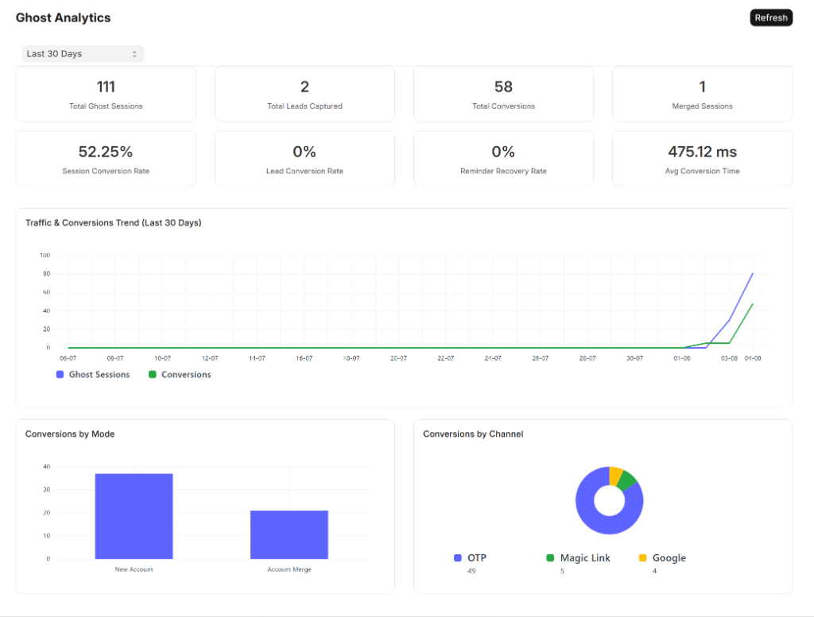
1. Real-Time Performance & KPI Metrics
The top metric panel consolidates 8 essential real-time conversion and telemetry indicators:
- Session & Lead Conversion Rates (52.25%): Immediately quantify exactly what percentage of temporary anonymous visitors transition into authenticated registered customers.
- Sub-500ms Execution Speed (Avg Conversion Time): Demonstrates the immense architectural
performance of Ghost's targeted SQL transformation engine, recording lightning-fast average conversion
latencies (e.g.,
475.12 ms) without causing database table locking! - Merged Sessions & Reminder Recovery Rates: Explicitly track abandoned cart recovery metrics and cross-device account unifications in real time.
2. Interactive Timeframes & Multi-Channel Breakdown
Equipped with responsive date range filtering (Last 7 Days, Last 30 Days, Last 90 Days, and Last 180 Days), system administrators can drill deep into historical traffic trends. The visualizer splits telemetry across two core dimensions:
- Conversions by Mode (Bar Chart): Analyzes the exact proportion of users claiming brand-new
accounts (
New Account) versus recurring customers merging anonymous sessions back into pre-existing user profiles (Account Merge). - Conversions by Channel (Donut Chart): Provides instant visibility into your most popular user acquisition pathways, categorizing successful transformations across One-Time Passwords (OTP), passwordless Magic Links, and instantaneous Google Social Login!
📡 Complete API Reference
All endpoints accept requests formatted as standard JSON payloads with appropriate authorization headers. Rate limits default to 100 calls per hour per originating IP address.
1. Session & Identity
create_ghost_session
Provisions a new anonymous profile and returns OAuth2 bearer tokens. If fingerprinting is enabled, passing a recognized hash gracefully reconnects the visitor to their existing unexpired account.
- URL:
/api/method/ghost.api.ghost.create_ghost_session - Method:
POST - Authorization: None (Guest allowed)
// Request Body
{
"email": null, // Optional custom email override
"fingerprint": "a8f9d231" // Optional device fingerprint hash
}
// Success Response (200 OK)
{
"message": {
"user": "ghost_8b10c9da@guest.local",
"access_token": "79b32c8f001a4e93...",
"refresh_token": "b8901c2374ef091b...",
"expires_in": 3600,
"token_type": "Bearer",
"message": "Ghost session created" // Or "Reconnected to existing Ghost session"
}
}convert_to_real_user
Converts an authenticated temporary user into a persistent real account upon presenting a valid verified OTP verification code.
- URL:
/api/method/ghost.api.ghost.convert_to_real_user - Method:
POST - Authorization: Bearer Token (Current Ghost Session)
// Request Body
{
"ghost_email": "ghost_8b10c9da@guest.local",
"real_email": "jane.doe@example.com",
"first_name": "Jane",
"last_name": "Doe",
"otp_code": "849201",
"bypass_otp": false
}
// Success Response (200 OK)
{
"message": {
"status": "success",
"mode": "rename", // Or "manual_migration" if account existed
"user": "jane.doe@example.com",
"access_token": "e4b90a811c79402a...",
"refresh_token": "a1d88b002c91823f...",
"expires_in": 3600
}
}2. OTP Verification & Authentication
send_otp
Dispatches a secure 6-digit verification pin to a target email or mobile phone number.
- URL:
/api/method/ghost.api.otp.send_otp - Method:
POST - Authorization: None (Guest allowed)
// Request Body
{
"email": "jane.doe@example.com",
"phone": "+15551234567",
"purpose": "Conversion"
}validate_otp
Verifies a submitted OTP PIN against an unexpired stored record without initiating conversion directly.
- URL:
/api/method/ghost.api.otp.validate_otp - Method:
POST
refresh_bearer_token
Exchanges a previously granted valid OAuth2 refresh token for a fresh short-lived access token.
- URL:
/api/method/ghost.api.auth.refresh_bearer_token - Method:
POST
// Request Body
{
"refresh_token": "b8901c2374ef091b..."
}3. Advanced Conversion Modules
send_magic_link & consume_magic_link
Dispatches a one-click authentication link via email (send_magic_link) and verifies token
conversion when clicked by the recipient (consume_magic_link).
- URL:
/api/method/ghost.api.magic_link.send_magic_link - URL:
/api/method/ghost.api.magic_link.consume_magic_link
convert_with_google
Validates an identity token issued by Google OAuth Providers to execute instantaneous zero-friction account transition.
- URL:
/api/method/ghost.api.social.convert_with_google - Method:
POST - Authorization: Bearer Token
// Request Body
{
"ghost_email": "ghost_8b10c9da@guest.local",
"id_token": "eyJhbGciOiJSUzI1NiIsImtpZCI6..."
}capture_email
Records a customer's email address during mid-session browsing without demanding immediate verification, supporting cart abandonment email workflows.
- URL:
/api/method/ghost.api.lead.capture_email - Method:
POST - Authorization: Bearer Token
get_conversion_funnel (BI & Analytics)
Exposes time-series analytics funnel stage evaluations formatted specifically for external charting tools (Grafana / Metabase).
- URL:
/api/method/ghost.api.analytics.get_conversion_funnel - Method:
GET - Authorization: System Manager / Administrative Bearer Token
💻 Frontend Integration Guide
Below is a copy-paste ready reference implementation demonstrating how to incorporate Ghost into modern React, Vue, or native JavaScript Single Page Applications (SPAs).
Complete User Lifecycle Walkthrough
// ================================================================
// 1. INITIALIZE GHOST SESSION & STORE BEARER TOKEN
// ================================================================
// Simple simulated device fingerprint hash generator
function getDeviceFingerprint() {
let fp = localStorage.getItem('ghost_device_fp');
if (!fp) {
const raw = navigator.userAgent + screen.width + 'x' + screen.height;
let hash = 0;
for (let i = 0; i < raw.length; i++) {
hash = ((hash << 5) - hash) + raw.charCodeAt(i);
hash |= 0;
}
fp = 'fp_' + Math.abs(hash).toString(16);
localStorage.setItem('ghost_device_fp', fp);
}
return fp;
}
// Initialize session immediately upon landing on your storefront
async function initSession() {
const response = await fetch('/api/method/ghost.api.ghost.create_ghost_session', {
method: 'POST',
headers: { 'Content-Type': 'application/json', 'Accept': 'application/json' },
body: JSON.stringify({ fingerprint: getDeviceFingerprint() })
});
const { access_token, refresh_token, user } = (await response.json()).message;
// Save credentials safely in storage
sessionStorage.setItem('access_token', access_token);
localStorage.setItem('refresh_token', refresh_token);
sessionStorage.setItem('ghost_user', user);
}
// ================================================================
// 2. INTERACT WITH YOUR PLATFORM USING TOKENS
// ================================================================
async function addToCart(itemCode, qty) {
const token = sessionStorage.getItem('access_token');
await fetch('/api/method/my_store.cart.add_item', {
method: 'POST',
headers: {
'Content-Type': 'application/json',
'Authorization': `Bearer ${token}` // Pass token in authorization header
},
body: JSON.stringify({ item: itemCode, quantity: qty })
});
}
// ================================================================
// 3. SEAMLESS CONVERSION AT CHECKOUT
// ================================================================
async function requestConversionOTP(customerEmail) {
await fetch('/api/method/ghost.api.otp.send_otp', {
method: 'POST',
headers: { 'Content-Type': 'application/json' },
body: JSON.stringify({ email: customerEmail, purpose: 'Conversion' })
});
}
async function finalizeAccountConversion(customerEmail, otpCodeInput) {
const currentToken = sessionStorage.getItem('access_token');
const ghostEmail = sessionStorage.getItem('ghost_user');
const res = await fetch('/api/method/ghost.api.ghost.convert_to_real_user', {
method: 'POST',
headers: {
'Content-Type': 'application/json',
'Authorization': `Bearer ${currentToken}`
},
body: JSON.stringify({
ghost_email: ghostEmail,
real_email: customerEmail,
otp_code: otpCodeInput
})
});
const { access_token, refresh_token, user } = (await res.json()).message;
// Update tokens to reflect permanent authenticated status!
sessionStorage.setItem('access_token', access_token);
localStorage.setItem('refresh_token', refresh_token);
console.log("🎉 User converted successfully! Cart contents preserved.");
}Built-In Interactive Demo & Playground
Want to experiment with these flows live? Open your browser to http://your-site:8000/ghost to
launch our modern interactive playground, featuring step-by-step state visualization and real-time response
inspection.
🗄️ DocType Schema & Data Models
When Ghost is installed onto your Frappe environment via bench migrate, it provisions 6
specialized database schemas (DocTypes) engineered for high-throughput guest session management,
strict cryptographic security, and automated database hygiene.
| DocType Name | Type | Key Data Fields | Operational Purpose & Automated Behavior |
|---|---|---|---|
Ghost Settingsghost_settings |
Single | enable_ghost_users, default_ttl_days, secret_key,
custom_html
|
Acts as the central configuration engine across 7 administrative tabs. Governs session lifetimes, social login keys, OTP rate limits, and custom verification branding. |
Ghost Leadghost_lead |
Standard (Table) |
ghost_user, captured_email, status, last_active_at
|
Powers abandoned cart recovery and pre-conversion marketing pipelines. Safely captures user emails mid-journey before full registration, mapping them to anonymous session identifiers with automated email follow-up status tracking. |
Ghost Conversion Logghost_conversion_log |
Standard (Table) |
ghost_user, converted_user, conversion_mode,
conversion_date
|
Serves as the immutable audit ledger for analytics dashboards and external Business Intelligence (BI) tools. Logs transformation latency, User-Agent metadata, and conversion paths (Rename vs. Merge). Automatically pruned by daily scheduler cleanup jobs based on configured retention rules. |
Ghost Fingerprintghost_fingerprint |
Standard (Table) |
fingerprint_hash, ghost_user, created_at, expires_on
|
Enables returning visitor recognition by storing cryptographically hashed device and browser footprints. Allows visitors returning within their active window (default: 7 days) to seamlessly re-link to their existing anonymous session without creating database bloat or dropping active cart state. |
Ghost Magic Link Tokenghost_magic_link_token |
Standard (Table) |
token_hash, ghost_user, target_email, expires_at,
is_used
|
Secure token registry for passwordless email authentication. Stores one-time verification challenge hashes with tight expiration intervals (default: 30 minutes), enforcing single-use policies to completely eliminate token replay attacks. |
OTPotp |
Standard (Table) |
recipient, otp_code, attempts, verified,
expires_on
|
Tracks issued 6-digit one-time PINs across Email and SMS delivery channels. Monitors failed verification attempts in real time to enforce anti-bruteforce lockout rate limiting, and is automatically swept by background cron tasks every 10 minutes. |
🏗️ System Architecture & Scheduled Workers
Ghost is structured around decoupled service layers that isolate guest operations from standard authenticated business logic, ensuring reliability at scale.
Scheduled Tasks (Scheduler Integration)
| Module Path | Frequency | Operational Role |
|---|---|---|
ghost.tasks.expire_otps |
Every 10 Minutes | Sweeps database table and flags expired OTP PIN records as obsolete. |
ghost.tasks.send_lead_reminders |
Hourly | Queries unconverted Ghost Lead records older than configured reminder threshold and
triggers email follow-ups. |
ghost.tasks.delete_expired_ghost_users |
Daily | Executes high-performance batch SQL deletions against expired ghost user records and associated token tables. |
ghost.tasks.delete_old_conversion_logs |
Daily | Enforces data compliance by stripping conversion log entries older than configured retention days. |
🎮 Interactive Demo UI & Testing Playground
Ghost ships with a full-featured, zero-setup interactive web testing playground hosted at /ghost
on your Frappe development server. This allows developers, QA engineers, and marketing evaluators to test the
complete anonymous authentication and conversion lifecycle directly in their browser without having to design or
deploy custom frontend form components.
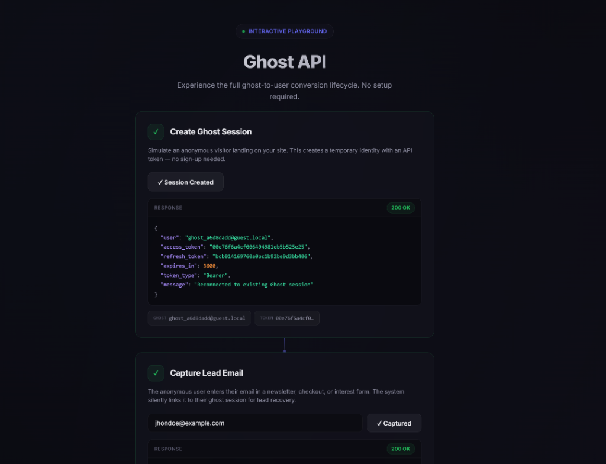
1. Simulating Anonymous Sessions & Fingerprinting
By clicking Create Ghost Session in Step 1, the playground triggers an immediate API request
to provision a temporary OAuth2 identity and displays the raw JSON bearer tokens in real time. If
Session Fingerprinting is enabled in Ghost Settings, returning visitors are automatically
recognized by their hardware footprint, emitting a seamless "Reconnected to existing Ghost session"
confirmation message!
2. Frictionless Conversions & Developer Magic Link Bypass
In Step 3, users can experience both immediate Google Social Login conversion and frictionless manual email transformations. To accelerate QA workflows and local automated integration testing, the execution panel generates an interactive Developer QA Bypass Button directly inside the live response container!
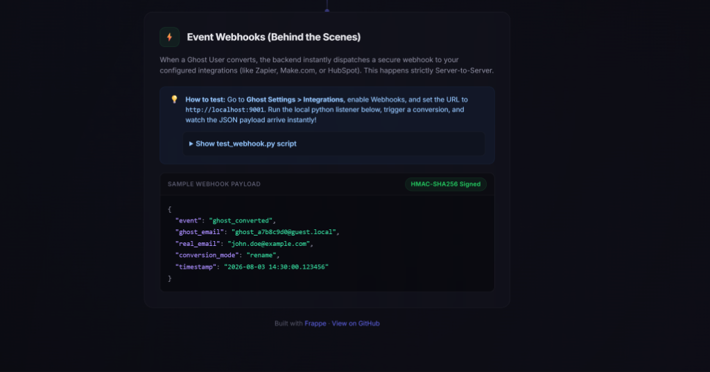
Clicking the generated purple button (🔗 Click here to test Magic Link (Bypasses Email)) allows
integration testers to immediately transition ghost accounts without having to set up live SMTP servers or open
third-party email inboxes!
3. Standalone Verification Landing Page (/convert)
When users verify their identities via Magic Links or automated transactional notifications, Ghost routes them
through our clean, secure, dark-mode verification web portal hosted at /convert. This interface can
be completely skinned and branded using raw HTML/CSS from Tab 7 in Ghost Settings.
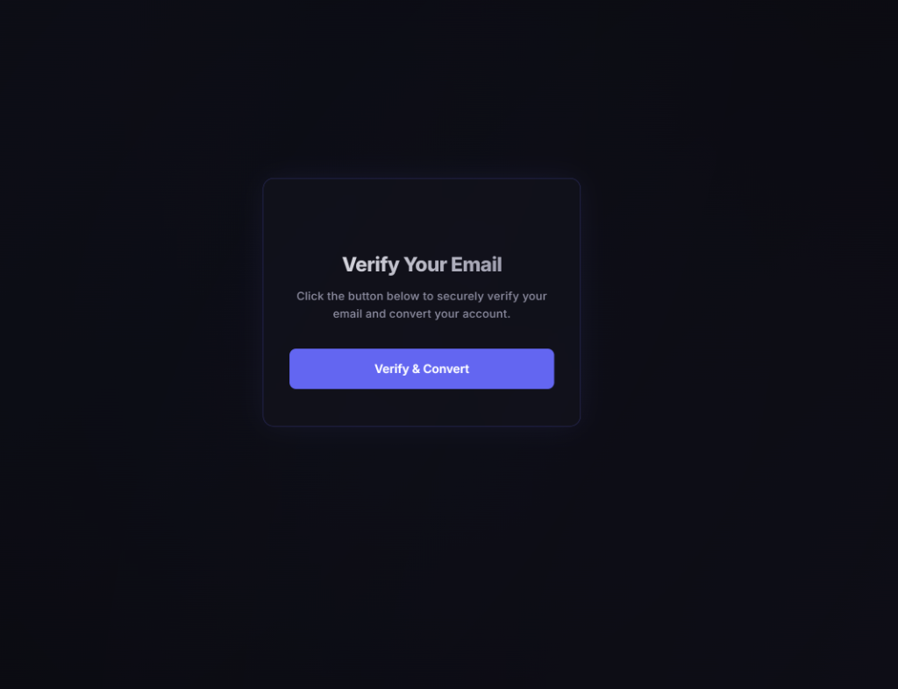
4. Realtime Webhooks & Behind the Scenes Telemetry
At the bottom of the interactive playground, developers can monitor live event dispatches. When an account
converts, Ghost displays the structured JSON payload along with its cryptographic HMAC-SHA256 signature
verification headers, complete with instructions for launching a local listener script
(test_webhook.py).
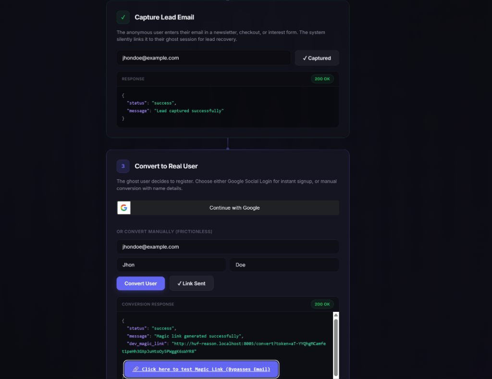
🧪 Testing & Bruno Verification Suite
Ghost prioritizes rock-solid production stability and maintains an extensive verification ecosystem covering unit testing, functional verification, and continuous integration.
Running Unit Tests
Our automated testing framework spans 15 standalone Python test suites located inside
ghost/tests/. To execute verification directly against your developer site:
# Run complete test coverage suite from bench command line
bench --site your-site.localhost run-tests --app ghost
# Run specific feature test modules
bench --site your-site.localhost run-tests --app ghost --module ghost.tests.test_fingerprintingBruno API Collection
We bundle an extensive Bruno API Collection inside the repository's /bruno/
subdirectory. Containing 13 pre-built requests equipped with automatic post-response scripts that populate
tokens into your workspace variables, it represents the fastest way to verify API contracts manually or inside
automated CI pipelines.
Refer to bruno/README.md for complete test flow instructions.
🤔 FAQ & Troubleshooting
Q: Why am I receiving an error stating "OAuth Client ID is required"?
Ghost generates standard OAuth2 bearer tokens for guest user sessions. Before initializing sessions, you must generate an OAuth Client inside Frappe desk (Setup > Integrations > OAuth Client) and paste its corresponding ID into your Ghost Settings.
Q: What happens to cart items, order proposals, or custom application data when a ghost converts?
During conversion, Ghost's engine intelligently inspects all link and child tables associated with your
application (_GHOST_LINK_TABLES). If converting to a new email address, it performs a high-speed
direct SQL rename, preserving 100% of linked records instantly. If converting to an existing registered user, it
reassigns ownership of application-owned records without executing heavy framework merges.
Q: Can I utilize Ghost inside React Native, Flutter, or mobile web view applications?
Yes! Because Ghost avoids browser cookies entirely and operates solely on standard OAuth2 authorization header
tokens (Authorization: Bearer ), it integrates seamlessly into native iOS and Android mobile
client environments.
Q: Is Ghost compliant with GDPR and enterprise privacy standards?
Yes. Ghost automatically triggers daily scheduled pruning jobs that erase expired anonymous guest records from your database after a configurable retention threshold (defaulting to 30 days). No lingering personally identifiable data is left behind.
🤝 Community Support, Privacy & Legal Compliance
Ghost is an open-source Frappe framework extension designed with strict security, GDPR data privacy compliance, and developer transparency at its core.
1. Technical Support & Issue Reporting
For community bug fixes, architectural questions, or feature enhancement proposals, please interact directly with our development team through official repository channels:
- Issue Tracker & Bug Reports: https://github.com/muneeb141/ghost/issues
- Developer Repository: https://github.com/muneeb141/ghost
2. Privacy Policy & Data Retention (GDPR Compliance)
Ghost is engineered to eliminate unnecessary database storage of sensitive user metadata. Anonymous guest profiles, hardware fingerprints, and conversion audit logs are governed by automated scheduler workers that prune obsolete records according to strict administrative retention limits (defaulting to 30 days for sessions and 90 days for audit logs). Ghost never transfers user telemetry or identification tokens to third-party tracking networks.
3. Terms of Service & Open Source License
Ghost is free and open-source software distributed under the terms of the Massachusetts Institute of Technology (MIT License). You are free to copy, modify, distribute, and integrate this software within commercial and enterprise Frappe deployments without subscription restrictions or proprietary vendor lock-in. Full licensing terms can be reviewed directly in our Repository License File.